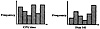
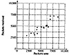

| Previous | Table of Contents | Next |
| TABLE 6.1 Workload Characterization Using Average Values | ||
|---|---|---|
| Data | Average | Coefficient of Variation |
| CPU time (VAX-11/780) | 2.19 seconds | 40.23 |
| Number of direct writes | 8.20 | 53.59 |
| Direct-write bytes | 10.21 kbytes | 82.41 |
| Number of direct reads | 22.64 | 25.65 |
| Direct-read bytes | 49.70 kbytes | 21.01 |
| TABLE 6.2 Characteristics of an Average Editing Session | ||
|---|---|---|
| Data | Average | Coefficient of Variation |
| CPU time (VAX-11/780) | 2.57 seconds | 3.54 |
| Number of direct writes | 19.74 | 4.33 |
| Direct-write bytes | 13.46 kbytes | 3.87 |
| Number of direct reads | 37.77 | 3.73 |
| Direct-read bytes | 36.93 kbytes | 3.16 |
A histogram shows the relative frequencies of various values of a parameter. For continuous-value parameters, this requires dividing the complete parameter range into several smaller subranges called buckets (or cells) and counting the observations that fall in each cell. An example is shown in Figure 6.1 for CPU time and disk I/O. Tbe results can also be presented in tabular form, as shown in Table 6.3. This data can then be used in a measurement or simulation model to generate a test workload. In analytical modeling, histograms can be used to fit a probability distribution and to verify that the distribution used in the model is similar to that observed in the histogram. The quantile-quantile plots discussed in Section 12.10 and several statistical tests described in Chapter 27 may be useful in determining and verifying the distribution.
Given n buckets per histogram, m parameters per component, and k components, this method requires presenting nmk numerical values. This may be too much detail to be useful. Thus, this should be used only if the variance is high and the averages cannot be used.
The key problem with using individual-parameter histograms is that they ignore the correlation among different parameters. For example, short jobs (jobs with small elapsed time) may create a lower number of disk I/O and may take a smaller amount of CPU time than long jobs. A test workload based on the single-parameter histograms may generate a job with short CPU time and a large number of disk I/Os—a situation generally not possible in a real workload. This problem is avoided by using multiparameter histograms, which are described next.

FIGURE 6.1 Single-parameter histograms of CPU time and disk I/O.
| TABLE 6.3 Tabular Representation of a Single-Parameter Histogram | ||||||||||
|---|---|---|---|---|---|---|---|---|---|---|
| CPU Time (milliseconds) | Number of Disk I/O | |||||||||
| Program | 0-5 | 6-10 | 11-15 | 15+ | 0-20 | 21-40 | 41-60 | 60+ | ||
| DOVERSEND | ... | ... | ... | ... | ... | ... | ... | ... | ||
| EMACS | ... | ... | ... | ... | ... | ... | ... | ... | ||
| ... | ... | ... | ... | ... | ... | ... | ... | |||
| SCRIBE | ... | ... | ... | ... | ... | ... | ... | ... | ||
| PRESSIFY | ... | ... | ... | ... | ... | ... | ... | ... | ||
| DIRECTORY | ... | ... | ... | ... | ... | ... | ... | ... | ||
| TELNET | ... | ... | ... | ... | ... | ... | ... | ... | ||

FIGURE 6.2 Two-parameter histogram.
| Previous | Table of Contents | Next |
){kind=link}
){kind=link}
){kind=link}
){kind=link}